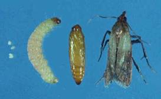
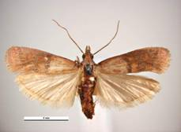

| Home |
| SUGARCANE |
PRIMARY STORAGE PEST |
INTERNAL FEEDERS |
| 1. Rice weevil |
| 2. Lesser grain borer |
| 3. Angoumois grain moth |
| 4. Pulse beetle |
| 5. Cigarette beetle |
| 6. Drug store beetle |
| 7. Tamarind Beetle |
| 8. Sweet Potato weevil |
| 9. Potato tuber moth |
| 10. Arecanut beetle |
EXTERNAL FEEDERS |
| 11. Red flour beetle |
| 12. Indian meal moth |
| 13. Fig moth or almond moth |
| 14. Rice moth |
| 15. Khapra beetle |
SECONDARY STORAGE PEST |
| 16. Saw toothed grain beetle |
| 17. Long headed flour beetle |
| 18. Flat grain beetle |
| 19. Grain lice |
| 20. Grain mite |
| Questions |
| Download Notes |
STORED GRAIN :: PRIMARY STORAGE PEST :: INTERNAL FEEDERS :: INDIAN MEAL MOTH
12. Indian meal moth: Plodia interpunctella (Phycitidae: Lepidoptera)
Distribution and status: The pest is worldwide.
Host range : It infests grains, meals, breakfast foods, soybean, dried fruits, nuts, s, dried roots, herbs, dead insects, etc.
Bionomics : Larva is white, often tinged with green or pink, a light-brown head, On reaching maturity, the larva is 8-3 mm in length. The adult moth is about 13-20 mm in wing expanse with a coppery lustre.
 Breeding continues throughout the year. The female moth lays 30-350 minute whitish ovate eggs, singly or in clusters, on or near the appropriate foodstuffs. The egg period is 2 days to 2 weeks depending upon weather. The larvae become full-grown in 30-35 days. They crawl up to the surface of the food material and pupate within a thin silken cocoon. The pupal stage lasts 4-35 days. In summer, the life-cycle is completed in 5 or 6 weeks and there are about 4-6 generations in a year.
Damage symptoms :
Only the larva causes damage. Crawling caterpillars completely web over the surface of a heap of grains with silken threads. The adults fly from one bin to another and spread the infestation.